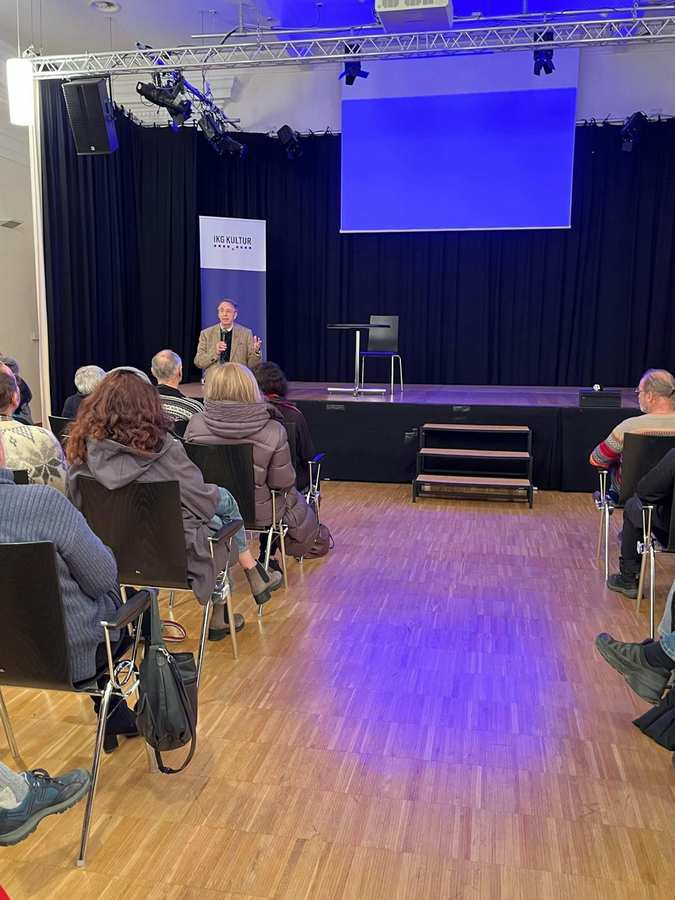
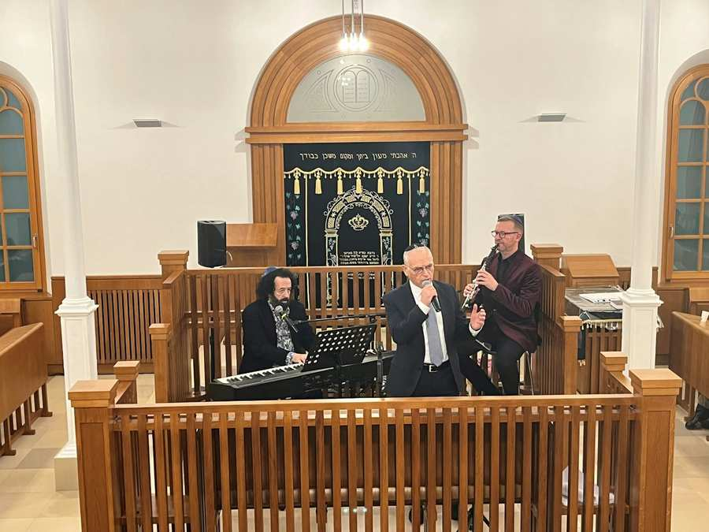
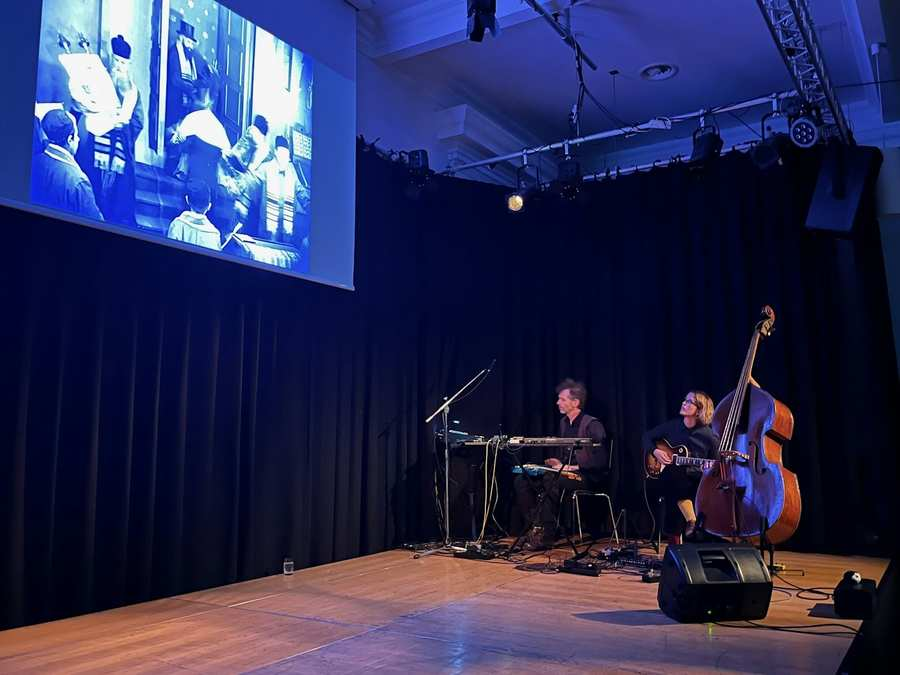
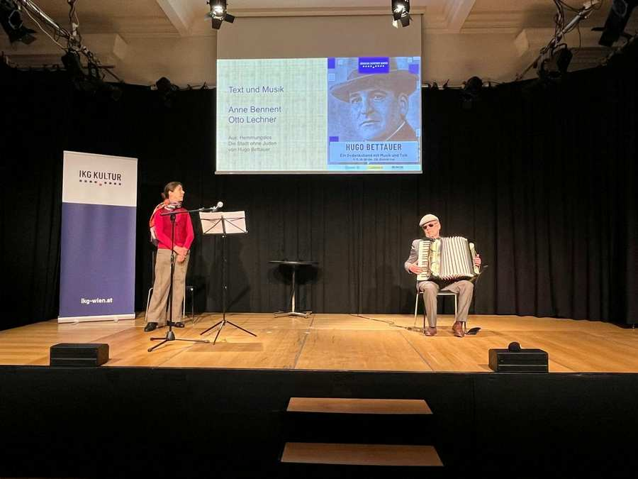
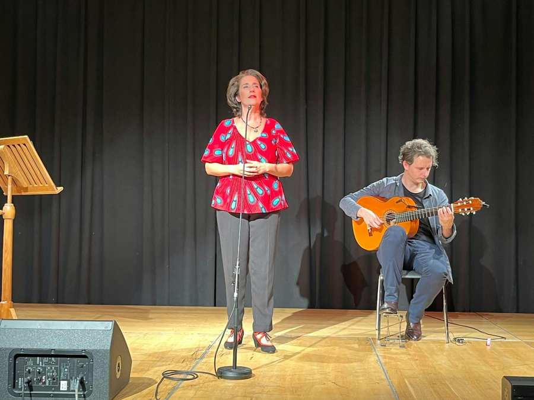
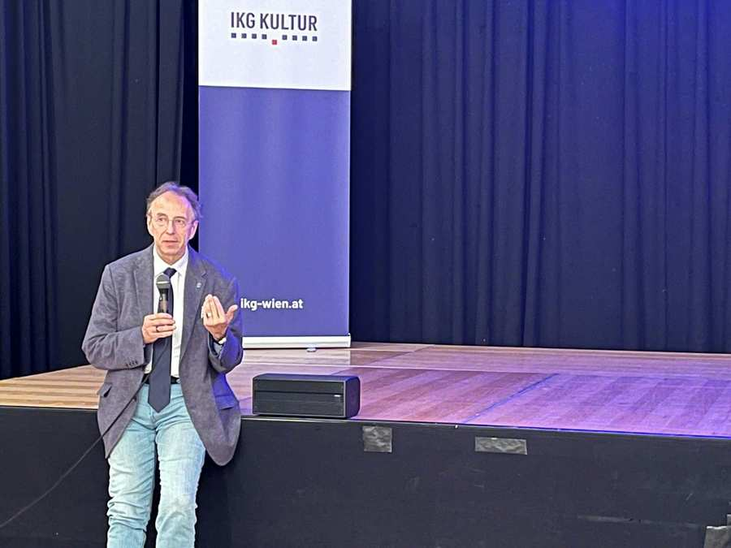
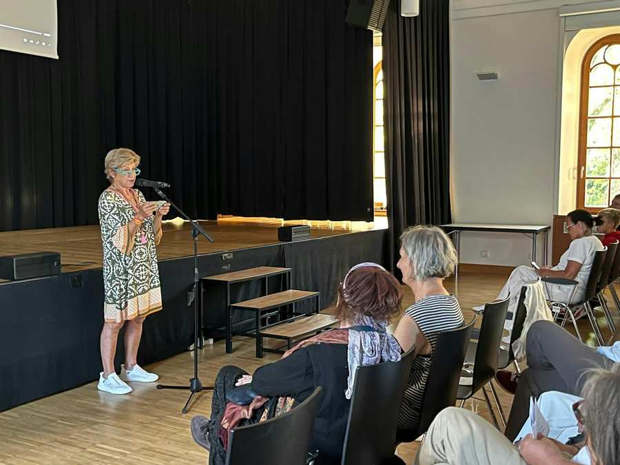
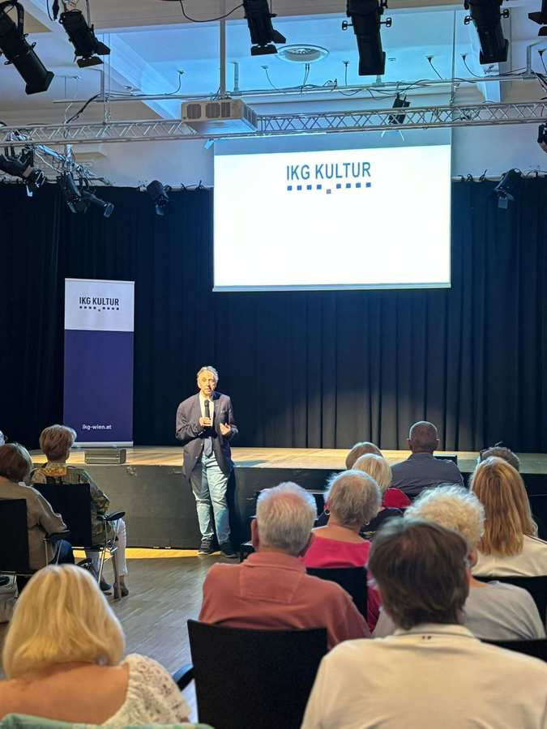
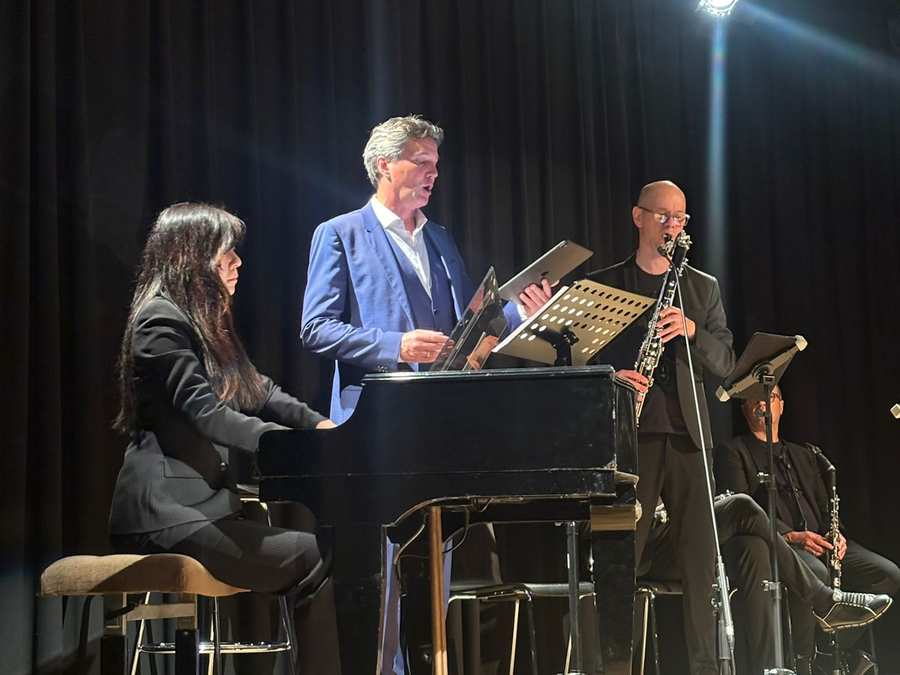

Categories
Order the IKG newsletter

Always up-to-date about the IKG and Jewish life in Vienna
Newsletter








Always up-to-date about the IKG and Jewish life in Vienna
Newsletter







